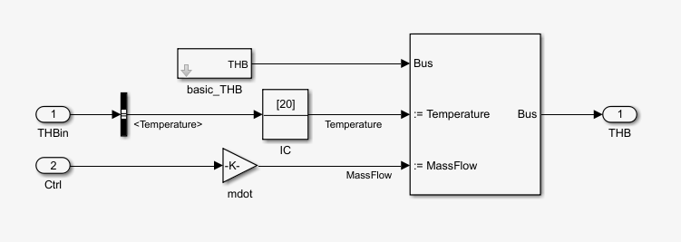

Pump basic
Pump basic Path: CARNOT/Hydraulics
Pump basic
Path: CARNOT/Hydraulics
Purpose
Very simple pump model where the mass flow rate is set to
a fixed value.
Description
This is a very simple pump, where the mass flow is set to the
a maximum specified in the
mask. This value is
multiplied with the incomming control signal.
Although the model sets a fixed flow rate, the calculation of the pressure drop
may be switched on. This can be usefull for the pump design later. The parameter
static height is only necessary when the parameter for the pressure drop is set
to "Full pressure drop with static height".
Note: The control signal is not limited by the model, a value above 1 is possible. Values below 0 must be avoided !

Inputs:
Outputs:
Example: the load in storage demos
Parameters and Dialog Box

Characteristics
Direct Feedthrough No
Sample
time
Inherited
from driving block
Vectorized
No